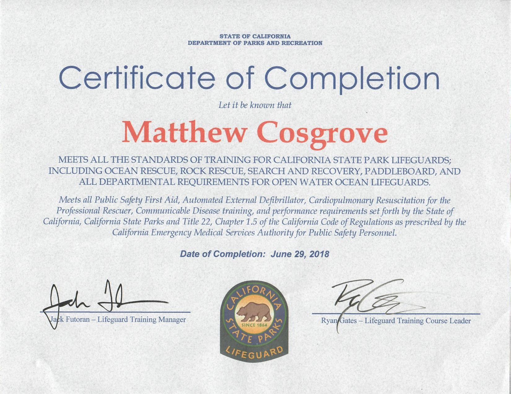
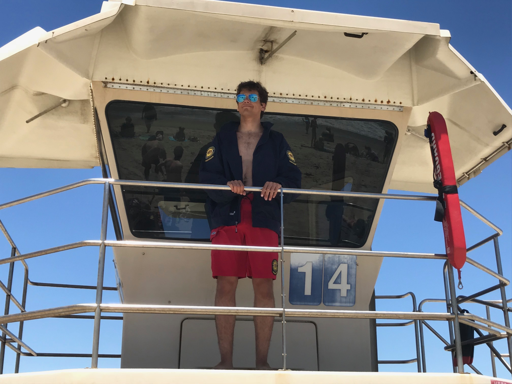
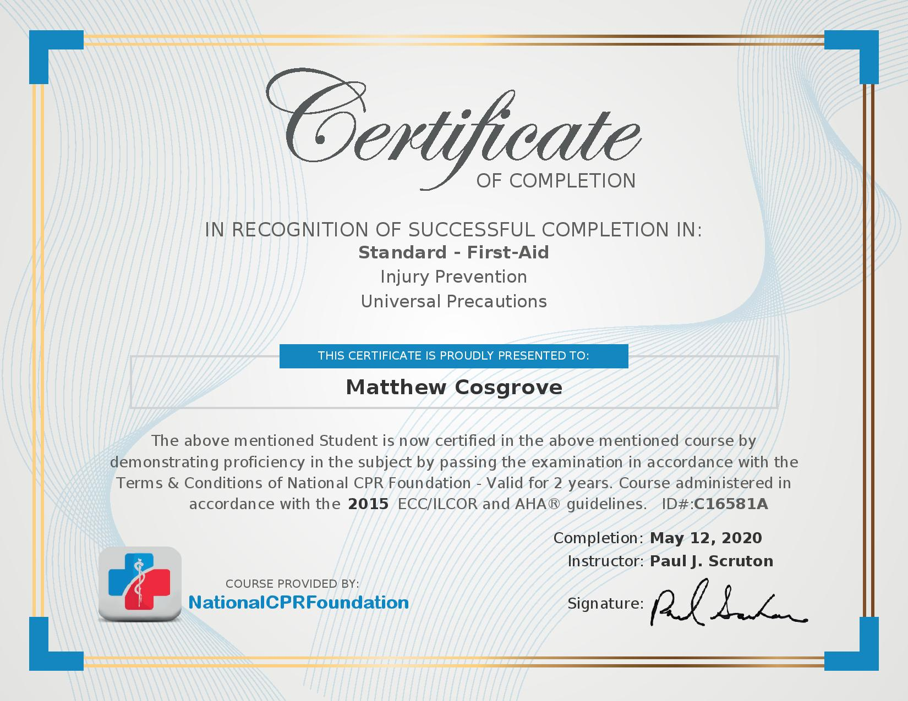
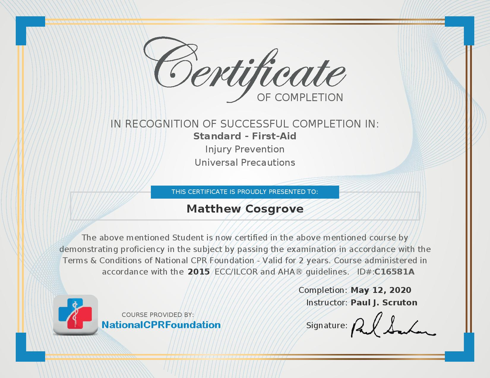

Matthew Cosgrove
After graduating high school at Xavier College Preparatory High School, I started to work as a lifeguard at Huntington State Beach for the duration of the summer. I worked as a lifeguard for two years. While working as a lifeguard, I was given multiple responsibilities. The most obvious and important responsibility was to supervise the state beach visitors and to keep them safe from the dangers of the beach and ocean. I had to rescue swimmers when necessary by swimming out to them and pulling them back to shore. Another duty that I had to perform was First Aid. When a swimmer was stung by a stingray and was bleeding, I would bandage the wound and help with the pain. e
At the current moment, I am in my third year at University of California – Riverside with a major in Theatre, Film, Directing, and Production (TFDP). During my college experience, I have participated in numerous student-run short films. I have acted in these films or helped as a gaffer or with the sound team. I have also been a part of a short film club, R’Shorts, which produced and is still producing student created short films.
Recently, during the summer of 2020, I had worked at an Arco gas station. My job there was to perform multiple tasks that included handling the transactions with customers, cooking the hot foods, and to keep track of stock and restock the shelves and refrigerators when needed. Other minor tasks where to keep the inside and areas of the outside of the gas station clean. Afterwards, I went to work in the corporate office of the owner of multiple Arco gas stations, like the one I had worked at. At the office, I was put under the supervision of the head of construction management where I handled file transactions between the office and the sellers of the construction supplies. I would also have to contact the different sellers when there were missing files and keep the files organized for my supervisor.
Experience
Lifeguard
• Supervised large areas of Huntington State Beach
• Performed First Aid and CPR when necessary
• Monitored swimmers and other visitors of the beach
Cashier
• Responsible for checking out customers
• Kept the interior clean, including floors and windows
• Stocked refridgerators and cooked foods
Actor/ Assistant
• Acted for multiple roles in numerous short films
• Assisted Sound Production team
Education
University of California Riverside
Portfolio




